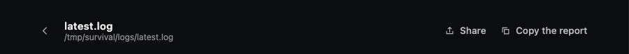
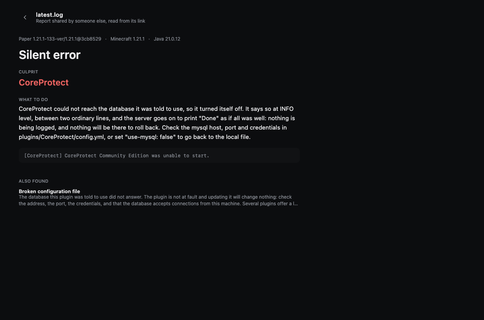

Sharing a report
You want someone else to look at your crash. You do not want to upload your server, and you do not want a paste that expires in a week.
Share gives you one link. The report travels inside the link.
How to share one
In the app — open a report and click Share, at the top right of the report:

The link goes straight onto your clipboard. Paste it into Discord, a GitHub issue, a forum thread, wherever. (Copy the report, next to it, gives plain text instead — handy where a long link would be cut.)
From the command line:
crashsleuth analyze /srv/minecraft --shareIt prints a link that looks like this:
https://holo795.github.io/CrashSleuth/r/#r=XVNNb9swDP0rhLBj6tZNu605bcv6kWFri7W3tgdGph0hipR...How to open one someone sent you
Either way works:
- Click it. It opens in any browser, no install, no account.
- Paste it into the app, in the "A report someone shared?" box on the home screen, and read it with the same interface as your own reports.
This is what they see — your report, with a line saying it was read from a link:

Why nothing is uploaded
Look at the link again. Everything after the # is the report itself, compressed and encoded.
A browser never sends the part after the # to the server. It is called the fragment, and it exists to point at a place inside a page; it stays in the browser. So when someone opens your link:
- the page at
holo795.github.io/CrashSleuth/r/is fetched — a static page, the same for everyone; - the report is decoded in their browser, from the link they already had;
- no server ever receives it, GitHub included.
Nothing is uploaded when you create the link either: making it is pure arithmetic on your own machine. No account, no expiry, no port opened, no service to trust — and nothing to delete afterwards, because nothing was stored.
What is inside the link
The report, not your files. That means:
- the environment line (server software, Minecraft version, Java version);
- the findings: situation, confidence, culprits, advice;
- the evidence lines quoted in the report;
- the list of mods or plugins, when the analysis had it.
It does not contain your logs in full, your world, your configuration files, your IP address or your player list. What you can see in the report is what the other person gets — nothing behind it.
Still worth a glance before sharing: an evidence line comes from your log, and a log can mention a folder path with your name in it, or a player name. Read what you are sending, the way you would read a paste.
How long the link lasts
As long as the page stays online. There is nothing to expire, because there is nothing stored anywhere: two years from now the same link decodes the same report.
The flip side: a very large report makes a very long link. Some chat clients cut long links — if yours does, send it as a file or use Copy the report instead, which gives plain text.